Encyclopedia
Pinturas faciais: Iwagudodoge
Pinturas faciais (boe ejiwu) do clã Iwagudodoge, metade Tugarege: 25 registros.
Pinturas faciais do clã Iwagudodoge, metade Tugarege. Descrições marcadas como pendentes foram omitidas; os dados aguardam validação pela comunidade.
- Kidoguro Kurirewu
- Cugui Oto — Representa o bico do tucaninho.
- Kuruguga Oiaga Atugo — Representa o rabo do gavião.
- Toroa Jokuria — Representa o rosto do gavião-pescador.
- Roko Okwa Corewu — Representa a boca do peixe curimba.
- Roko Okwa Kujagurewu — Representa a boca do peixe curimba.
- Tawie Bure — Representa o pé da gaivota.
- Aroe Eceba Oiaga Atugo — Representa as listras do rabo do gavião-real.
- Ikuie Mama Atugo — Representa uma espécie de cobra.
- Kidoguro Corewu
- Nonogo Kurirewu
- Nonogo Kurirewu 2
- Jarudo Atugo — Representa o peixe mandi (espécie de bagre).
- Araru Bure — Representa a cauda da piraputanga.
- Araru Bure 2 — Representa a cauda da piraputanga.
- Aroia Atugo Kujagurewu — Representa um tecido produzido à base de seda de tucum.
- Aroia Atugo Corewu — Representa um tecido produzido à base de seda de tucum.
- Iwagudodoge E Kujagu
- Iwagudodoge E Corewu
- Piroje Kanarewu Corewu — Representa as asas da andorinha.
- Piroje Kanarewu Kujagurewu — Representa as asas da andorinha.
- Tugó Imo Corewu — Representa o ser mitológico Tugó.
- Tugó Imo Kujagurewu — Representa o ser mitológico Tugó.
- Marido Jokuria Corewu — Representa o artefato cerimonial marido, feito de buriti.
- Marido Jokuria Kujagurewu — Representa o artefato cerimonial marido, feito de buriti.
Pictures
 Cugui Oto. Photo: Boe Ejerare (LanguageStructure/boe-ejerare)
Cugui Oto. Photo: Boe Ejerare (LanguageStructure/boe-ejerare) Kuruguga Oiaga Atugo. Photo: Boe Ejerare (LanguageStructure/boe-ejerare)
Kuruguga Oiaga Atugo. Photo: Boe Ejerare (LanguageStructure/boe-ejerare)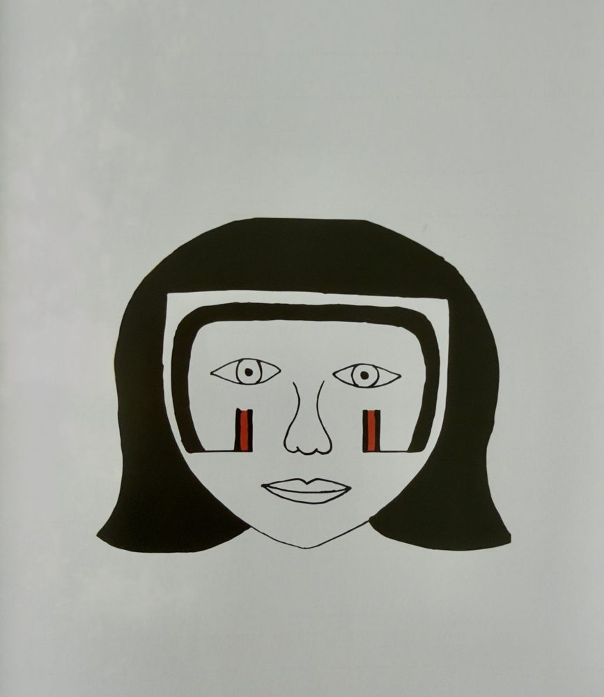
Toroa Jokuria. Photo: Boe Ejerare (LanguageStructure/boe-ejerare) Roko Okwa Corewu. Photo: Boe Ejerare (LanguageStructure/boe-ejerare)
Roko Okwa Corewu. Photo: Boe Ejerare (LanguageStructure/boe-ejerare) Roko Okwa Kujagurewu. Photo: Boe Ejerare (LanguageStructure/boe-ejerare)
Roko Okwa Kujagurewu. Photo: Boe Ejerare (LanguageStructure/boe-ejerare) Tawie Bure. Photo: Boe Ejerare (LanguageStructure/boe-ejerare)
Tawie Bure. Photo: Boe Ejerare (LanguageStructure/boe-ejerare)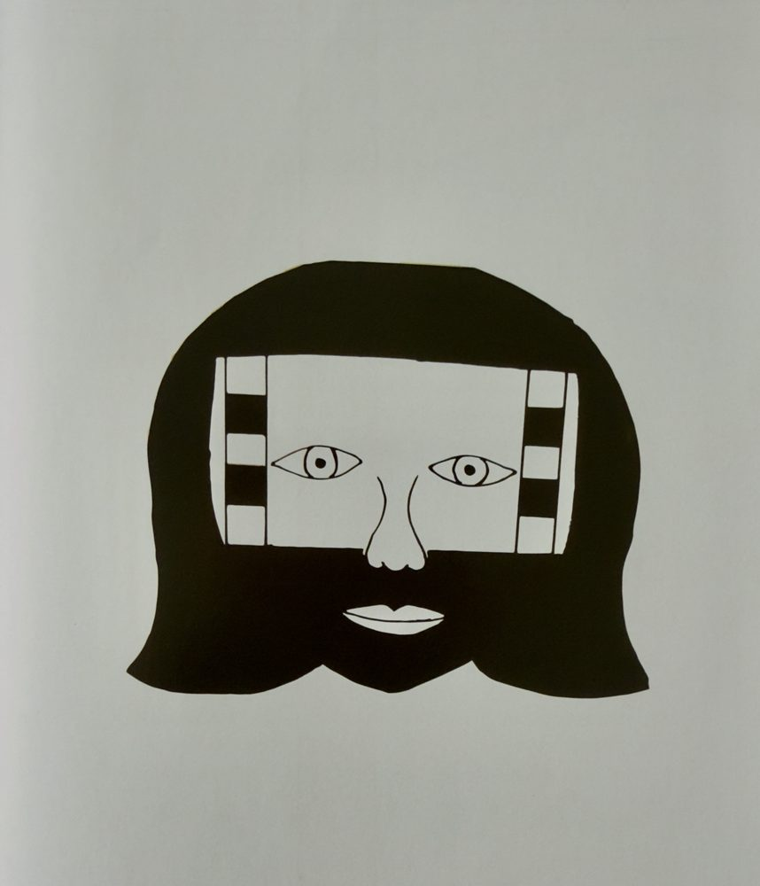
Aroe Eceba Oiaga Atugo. Photo: Boe Ejerare (LanguageStructure/boe-ejerare)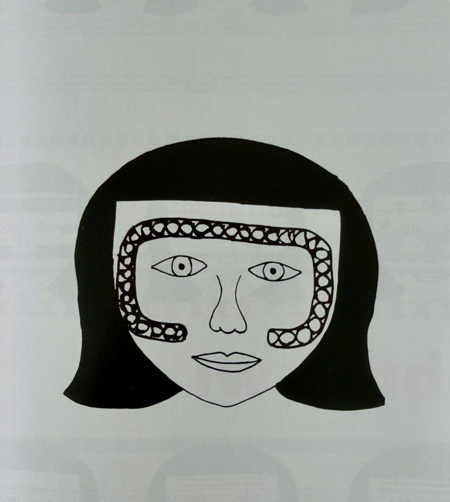
Ikuie Mama Atugo. Photo: Boe Ejerare (LanguageStructure/boe-ejerare)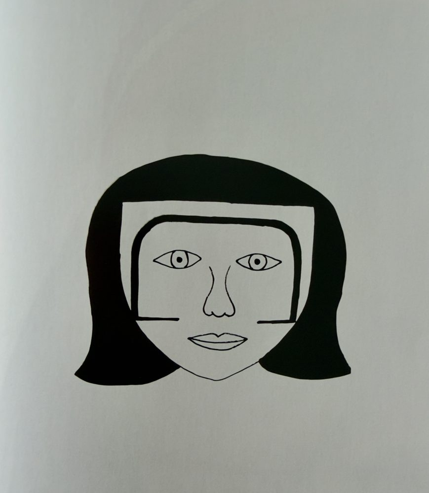
Kidoguro Corewu. Photo: Boe Ejerare (LanguageStructure/boe-ejerare) Nonogo Kurirewu. Photo: Boe Ejerare (LanguageStructure/boe-ejerare)
Nonogo Kurirewu. Photo: Boe Ejerare (LanguageStructure/boe-ejerare)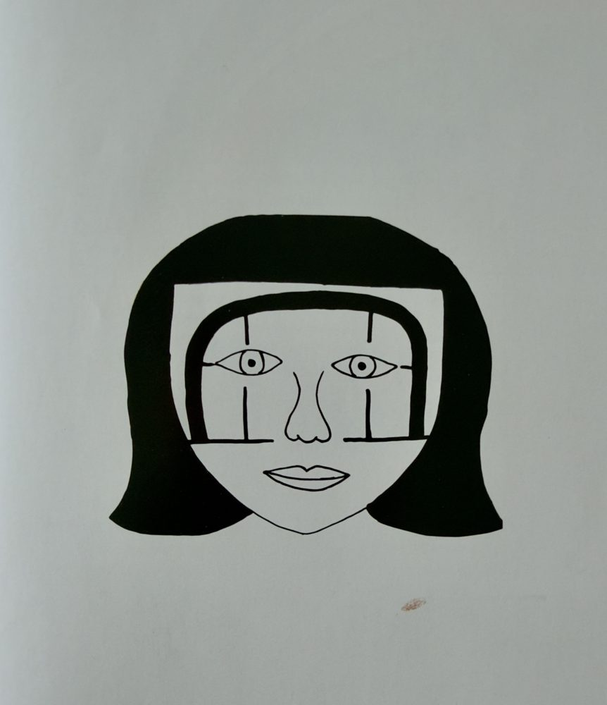
Nonogo Kurirewu 2. Photo: Boe Ejerare (LanguageStructure/boe-ejerare) Jarudo Atugo. Photo: Boe Ejerare (LanguageStructure/boe-ejerare)
Jarudo Atugo. Photo: Boe Ejerare (LanguageStructure/boe-ejerare)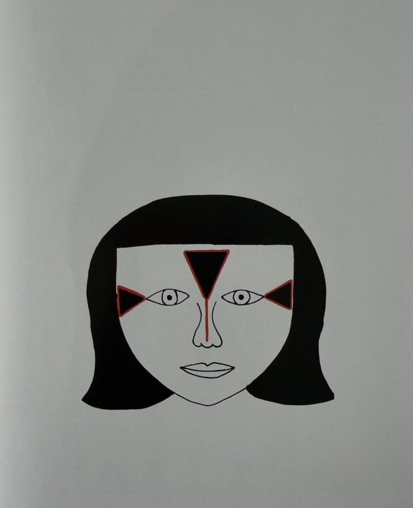
Araru Bure. Photo: Boe Ejerare (LanguageStructure/boe-ejerare) Araru Bure 2. Photo: Boe Ejerare (LanguageStructure/boe-ejerare)
Araru Bure 2. Photo: Boe Ejerare (LanguageStructure/boe-ejerare)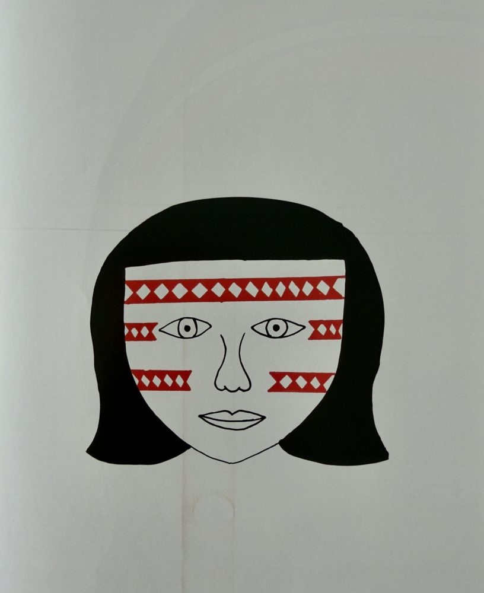
Aroia Atugo Kujagurewu. Photo: Boe Ejerare (LanguageStructure/boe-ejerare) Aroia Atugo Corewu. Photo: Boe Ejerare (LanguageStructure/boe-ejerare)
Aroia Atugo Corewu. Photo: Boe Ejerare (LanguageStructure/boe-ejerare)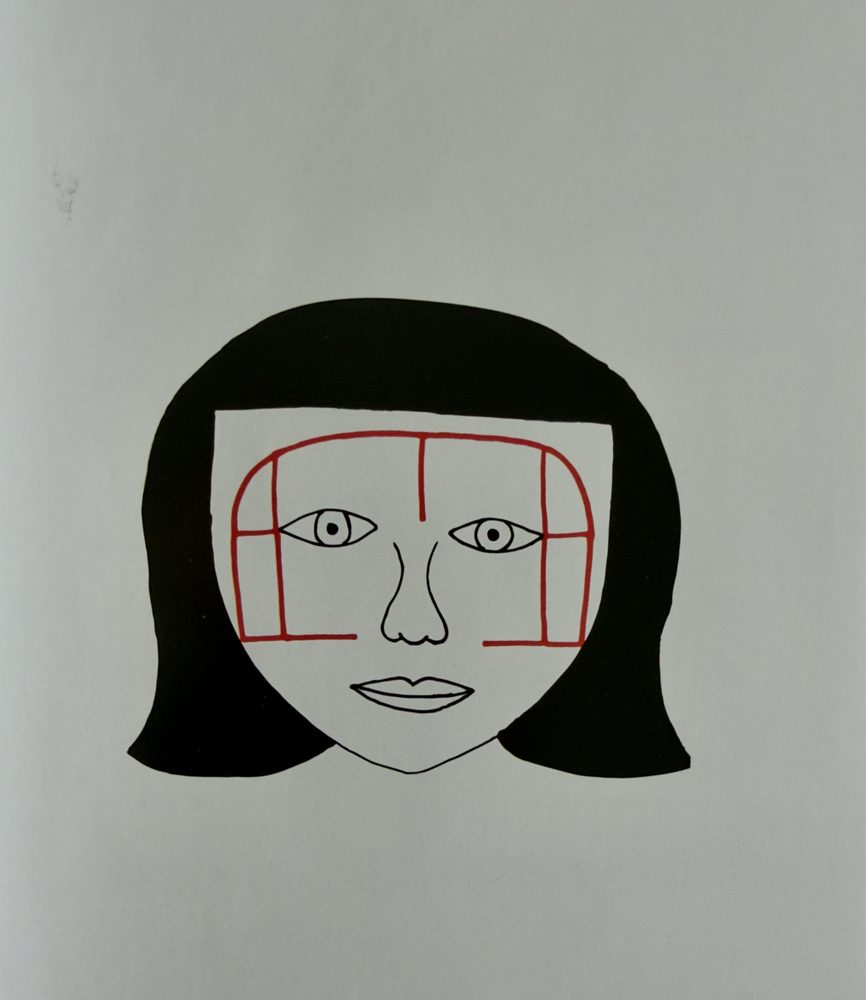
Iwagudodoge E Kujagu. Photo: Boe Ejerare (LanguageStructure/boe-ejerare) Iwagudodoge E Corewu. Photo: Boe Ejerare (LanguageStructure/boe-ejerare)
Iwagudodoge E Corewu. Photo: Boe Ejerare (LanguageStructure/boe-ejerare)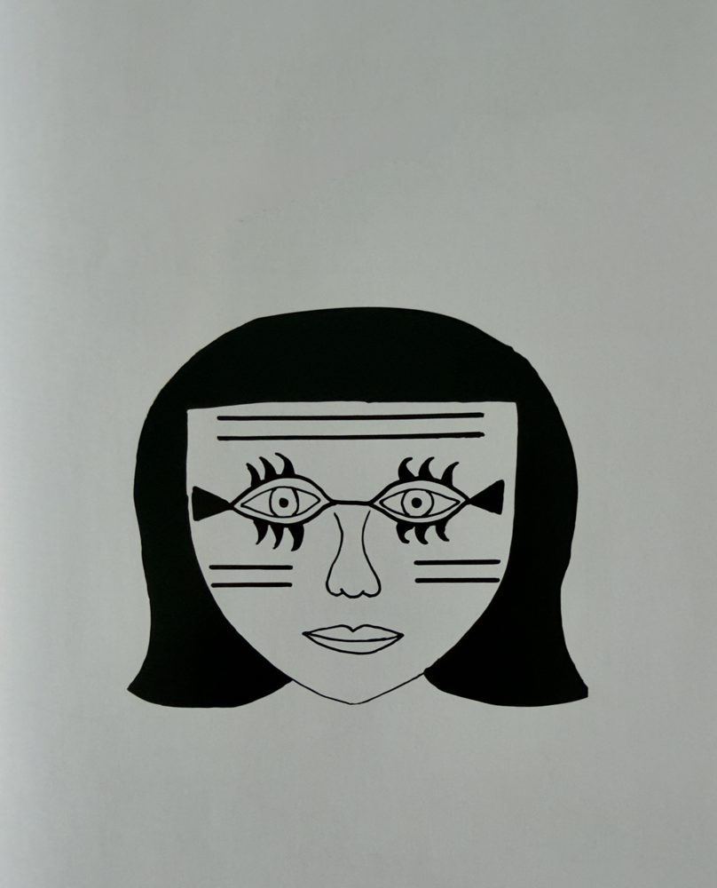
Piroje Kanarewu Corewu. Photo: Boe Ejerare (LanguageStructure/boe-ejerare)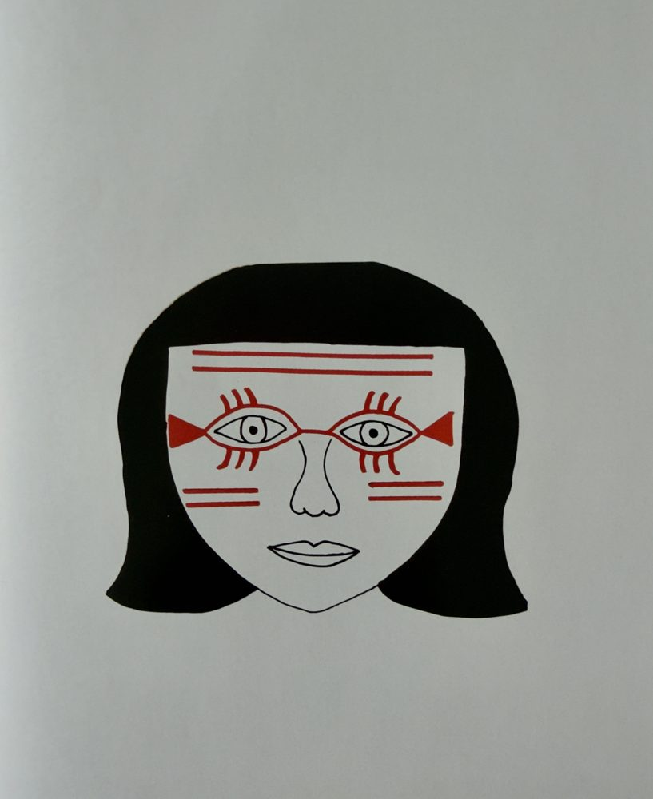
Piroje Kanarewu Kujagurewu. Photo: Boe Ejerare (LanguageStructure/boe-ejerare) Tugó Imo Corewu. Photo: Boe Ejerare (LanguageStructure/boe-ejerare)
Tugó Imo Corewu. Photo: Boe Ejerare (LanguageStructure/boe-ejerare) Tugó Imo Kujagurewu. Photo: Boe Ejerare (LanguageStructure/boe-ejerare)
Tugó Imo Kujagurewu. Photo: Boe Ejerare (LanguageStructure/boe-ejerare)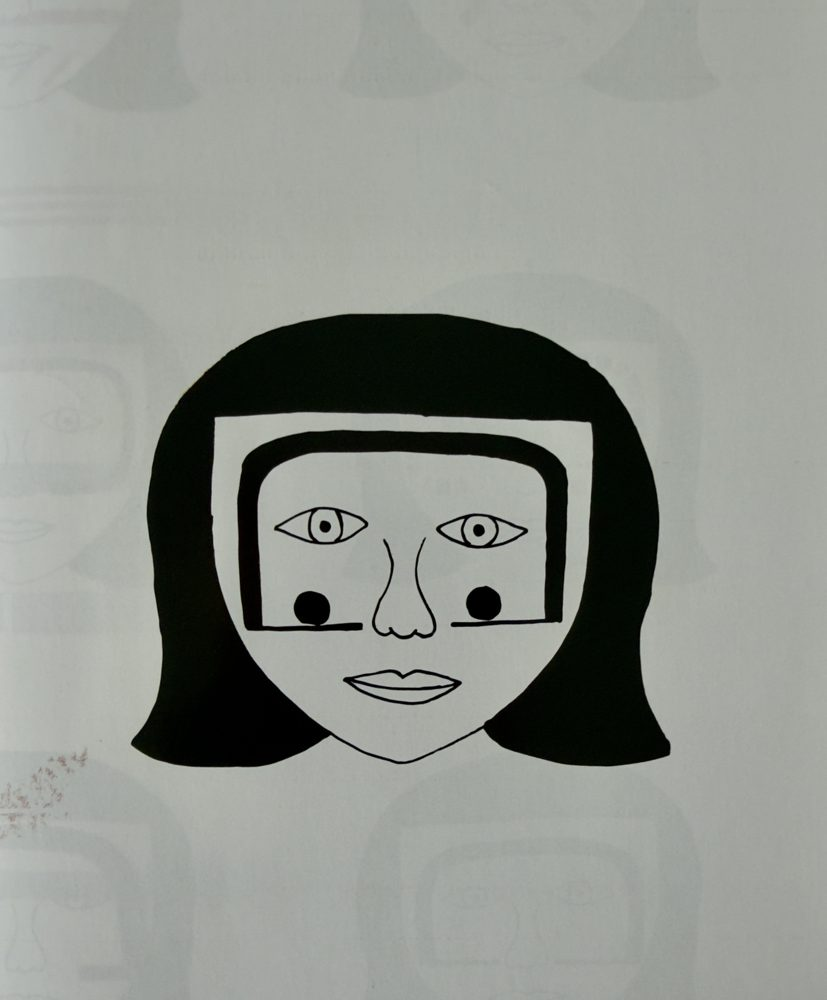
Marido Jokuria Corewu. Photo: Boe Ejerare (LanguageStructure/boe-ejerare) Marido Jokuria Kujagurewu. Photo: Boe Ejerare (LanguageStructure/boe-ejerare)
Marido Jokuria Kujagurewu. Photo: Boe Ejerare (LanguageStructure/boe-ejerare)
How to cite
Pinturas faciais: Iwagudodoge. In: Boe Eno Moto, Encyclopedia (2026-10-09). https://boeenomoto.terradoc.org/en/encyclopedia/pinturas-iwagudodoge.html
Updated 2026-10-09